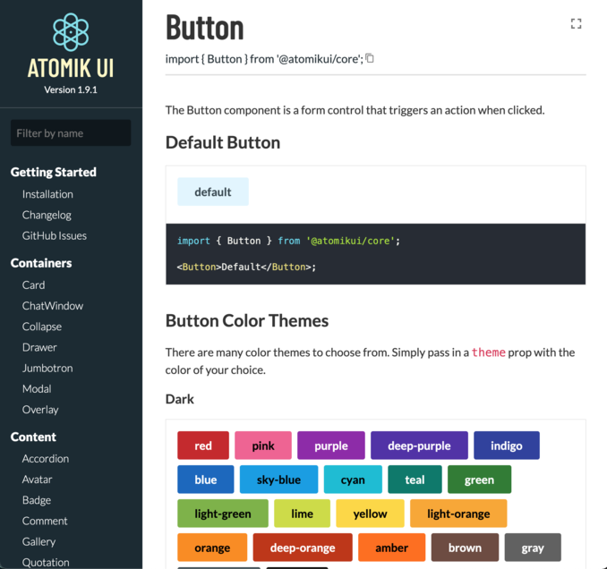

Hi, my name is
Alan Eicker.
Builder of All Things Frontend.
A Bit About Me
I began my journey 16 years ago as a junior front-end engineer for a small design company building ColdFusion websites for construction companies. Today, I lead the front-end efforts for one of America's largest insurance companies, working with technologies such as React, Redux and Node.js.
Throughout my career, I've seen the Web grow from simple static HTML websites into complex data-driven Progressive Web Apps. Over the years, I've invested countless hours honing my skills to stay on top of the next emerging technology trend. I'm not an expert at everything out there, but I'd be confident building just about anything UI related.
Areas of Expertise
- HTML5
- CSS3
- JavaScript
- TypeScript
- React
- Redux
- Next.js
- GraphQL
- Node.js
- Express
- PostgreSQL
- MongoDB
- Git
- Docker
- Jenkins

Featured Project
Atomik UI
An open source library of React components for rapid application development.
Atomik UI was a project that I began working on in March of 2020 at the begining of the Covid pandemic. It has always been something I wanted to do, and after 7 months of hard work, I published it to NPM along with the Atomik UI Core Sass Library.
Other Fun Projects
What Others are Saying
- Matt Adolf
- Manager of Creative Technology at Allstate
Alan is a terrific Front-End developer with excellent knowledge in advanced scripting, CSS, HTML5, and UI architecture. While working with Alan, his attention to detail was very valuable as he worked on many high profile projects. When confronted with a problem, Alan always persevered and would develop components to the website that utilized complex functionality while maintaining flexibility and ease of implementation. I would recommend Alan to any business looking for a solid front-end developer.
- Erik Gloor
- UX Lead at IMO
If you had 5 Alans you could rule the software universe. So I recommend hiring him and having him train 4 other guys to be as good as he is. Alan is the kind of front-end developer UX designers like myself dream of: Can work directly out of Photoshop comps, leveraging all assets therein with zero confusion, follows wire-frames to the letter, focuses like a laser on delivering high-quality front-end code that is virtually indistinguishable from the comp he was handed and does all of this at lightning speed. It was typical for me to send him a Photoshop comp on Tuesday and think he was merely reviewing it when I passed his cubicle on Wednesday when in fact he had already turned the comp in to code -- using CSS to mirror much of the imagery that appeared in the comp. The guy's a killer. If you're smart, you'll put him in charge of your whole front-end team.
- Ena Jenkins
- UX Engineer
Alan is a beast of a developer. Seriously. The guy is a cyborg or something. He is fearless when it comes to technology. I don't think there is any problem you can throw at Alan that he can't handle. All you have to say is "Hey Alan... do you think it's possible?" His response: "Probably... just gimme a minute to figure it out". Fearless.
Companies I've Worked for
- Allstate Insurance
- Mar 2015 - Present
- Lead Software Engineer - Front-End
- Senior Front-End Engineer
- RealPage
- Apr 2012 - Mar 2015
- Manager of Product Development
- Senior Front-End Developer
- Restaurant.com
- Nov 2010 - Apr 2012
- Senior Front-End Developer
- optionsXpress (now Charles Schwab)
- Feb 2008 - Nov 2010
- Web Designer / Front-End Developer
- Leader Graphic Design
- Mar 2007 - Feb 2008
- Web Designer / Front-End Developer